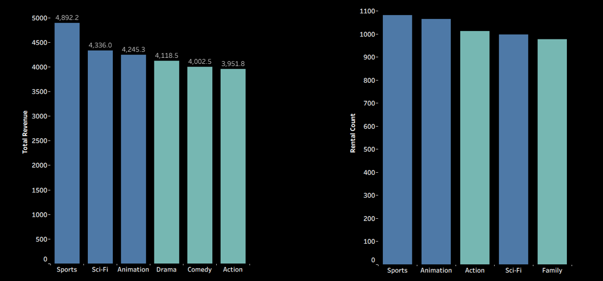
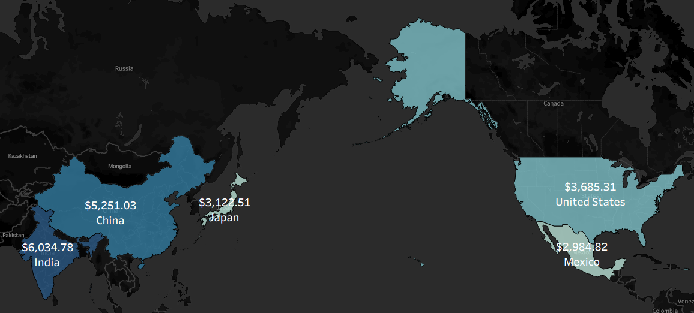

Business Problem
Rockbuster Stealth LLC, a global movie rental company, faced increasing competition from streaming platforms and sought to launch an online video rental service to remain competitive. The management team needed data-driven insights to guide strategic decisions around revenue optimization, customer segmentation, and regional performance.
Key Objectives
- Find top revenue-generating films
- Identify genres that perform best by revenue and rental volume
- Identify countries that contribute most to global revenue?
Data Source
Rockbuster relational database containing film, rental, customer, and payment tables.
Tools
- PostgreSQL(database management)
- SQL(joins, subqueries, CTEs, aggregation)
- Excel(data profiling & documentation)
- Tableau(charts, maps, & visual analytics)
Analytical Process
I loaded Rockbuster’s data into PostgreSQL, validated key relationships across tables, and wrote SQL queries using joins, aggregations, subqueries, and CTEs. The resulting outputs were visualized in Tableau to highlight revenue concentration, customer geography, and genre performance.
Visualizations
Top 10 Revenue Generating Movies

Most Popular Genres

Global Revenue Concentration — Top 5 Countries

Insights
- Revenue is concentrated in a small number of titles and countries.
- India, China, and the U.S. represent major customer markets.
- Sports, Animation, and Sci-Fi are strong content categories.
Recommendations
- Concentrate operational resources and marketing budgets in top-revenue countries while piloting growth initiatives in emerging markets.
- Prioritize licensing, promotion, and homepage placement of top-performing movies to maximize early engagement and revenue on the online platform
- Allocate a larger share of content investment toward Sports, Animation, and Sci-Fi titles to align with proven customer demand.